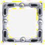

|  | Si vous supprimez 4 pierres ou plus horizontalement, elles se transformeront en une pierre magique qui, une fois activée, éliminera toutes les pierres d'une ligne.
|
|  | Si vous supprimez 4 pierres ou plus verticalement, elles se transformeront en une pierre magique qui, une fois activée, éliminera toutes les pierres d'une colonne.
|
| Si vous supprimez 5 pierres formant une croix (3 cellules horizontales croisant 3 cellules verticales), elles se transformeront en une pierre magique qui, une fois activée, éliminera toutes les pierres voisines.
|
|  | Cette pierre magique apparaîtra sur le plateau de jeu si vous parvenez à éliminer trois séries de pierres de couleurs différentes en un coup. Cette pierre change constamment de couleur avant d'être activée, à quel moment elle détruira toutes les pierres de cette couleur sur le plateau.
|
| Associez au moins 3 pierres de ce type et elles se transformeront en une pierre magique qui détruira toutes les pierres d'une ligne et d'une colonne.
|
| Cette pierre magique n'a pas besoin d'être activée. C'est une bombe à retardement. En explosant, elle détruira toutes les cellules voisines de la couleur de la pierre magique au moment de l'explosion.
|